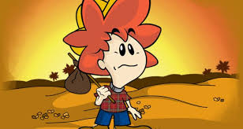

sobre nóssaiba maisO êxodo rural representa uma perda significativa de oportunidades tanto para as áreas rurais quanto urbanas, destacando a nessecidade de um equilibrio entre o desenvolvimento rural e urbano para um crescimento sustentável e incluso.
